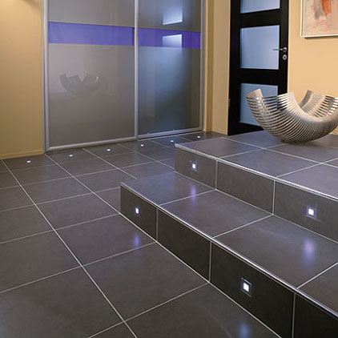

Dobrodošli!
Keramika Čolig je obrt s desetogodišnjim iskustvom u postavljanju svih vrsta zidnih i podnih pločica u kućanstvu i industriji. Nudi razna idejna rješenja i uvijek nastoji udovoljiti zahtjevima mušterija s visokom razinom kvalitete.
Osim keramičarskih radova bavi se postavljanjem mramornih i granitnih stepenica.
Referenca objekata na kojima su izvođeni radovi:
- PERADARSTVO BEŠTAK
- MESNICA ŠTEF
- MLJEKARA VODOPIJEVEC
- NOVOKEM
- OSNOVNA ŠKOLA K.Š. ĐALSKI
- OPĆINA RAKOVEC
- PEKARNA KRALJ
- KOINVEST d.o.o.
- LJEKARNE JAGATIĆ
- PROMETAL
- ALU-KON d.o.o.
